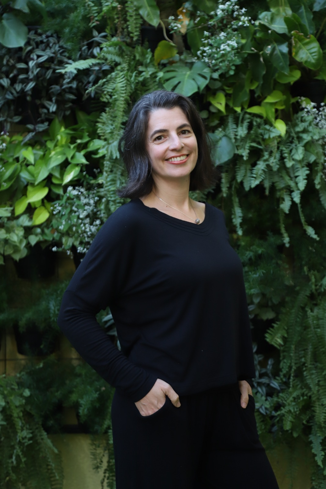

Profª. Esp. Luanna Nascimento
Pedagoga pela UFF, especialista em Gestão Pedagógica e Formação em Educação Infantil e em Educação Infantil numa Perspectiva Pikleriana. Atua há 14 anos como coordenadora pedagógica na Rede Municipal de Educação de São Paulo e na formação de equipes.